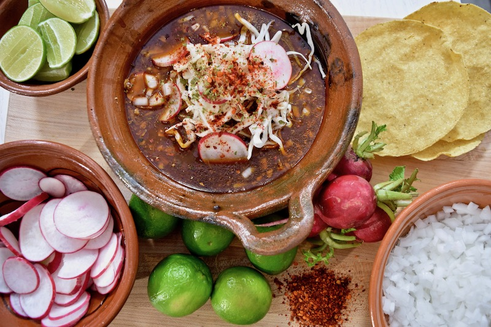

Pozole

A Hearty Bowl of Tradition and Flavor!
Dive into the comforting warmth of pozole, a traditional
Mexican soup that brings together vibrant flavors and rich
history in every bowl.
Made from hominy, tender meat (typically pork or chicken), and a blend of
aromatic spices, pozole is more than just a meal; it's a celebration of culture
and community. Whether enjoyed during festive gatherings or a cozy family
dinner, this hearty dish is sure to satisfy and nourish.
Ingredients
- 2 lbs pork (shoulder or loin), cubed
- 8 cups chicken broth
- 1 onion, quartered
- 2 cans (15 oz each) hominy, drained
- 4 cloves garlic, minced
- 2 tsp cumin
- Salt and pepper to taste
- Optional toppings: radishes, lime, cilantro, cabbage
Steps
- In a large pot, combine pork, broth, onion, garlic, cumin, salt, and pepper. Simmer until pork is tender (about 1.5-2 hours).
- Stir in drained hominy and simmer for an additional 30 minutes.
- Ladle into bowls and top with your favorite toppings. Enjoy!